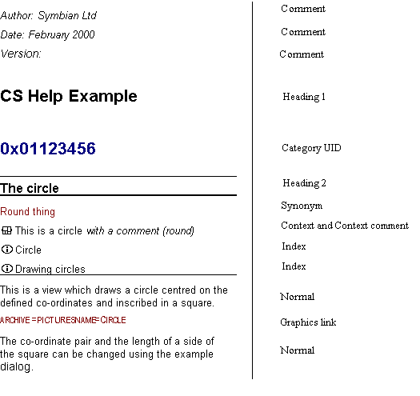

|
| |
The rtf source file contains the text, conveyed in
styled markup, for the help file. This includes the category (application)
name, help file UID and the topic titles, context terms, synonyms, index terms,
and body text.
The procedure for creating an rtf source file is given in the Quick
start document—first link below. The procedure for other
rtf configuration options, e.g. adding a graphic, are also
discussed in the linked topics below.
Quick start: using the CS Help compiler, How to insert graphics into a rtf source file, How to insert a new topic in a help file, How to improve topic searching using synonyms
|
The following example shows a segment of the
Shapes.rtf rich-text source file, which is based on the
cshelp.dot MSWord template. The left hand column shows the
rtf file contents, the right hand column names the style used in
each line in the rtf file.

rtf source file fragment
The first lines of text form an introduction to the document
(Comment style). Text marked in the Comment
style is not converted by the CS Help compiler, so the document introduction
does not appear in the final database.
The text marked with Heading 1 and Heading
2 styles are the category and topic names, respectively. The text
marked in Category UID style is the UID of the application.
The text marked in Normal style forms the main body text for
the topic.
Synonym style is used to give alternative names
for the topic that may be searched on. The Context style
indicates the context for each topic, there may be any number of contexts for
each topic. Context Comment style is used to form a program
language comment in the generated header file. The Index style
indicates the index for the topic, there may be any number of indexes for each
topic.
The Graphic Link style indicates to the CS Help
compiler that a picture is to be inserted in the output database.
Copyright ©2002 Symbian Ltd. 6.1-00174 |
|